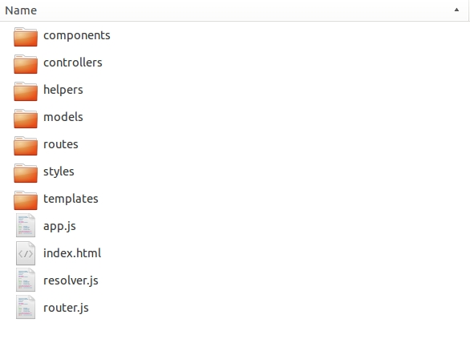

Ember.js as just another JS Framework
named alongside Angular or the React Stack
open-source community project
latest major release v2.0 in August '15
focus on convention over configuration paradigm

So what's special about Ember?
The growing and community-driven ecosystem
What is Ember-CLI?

the Ember.js command line utility for developing your Ember.js projects
npm install -g ember-cli
npm install -g bower
// Ready to create a new ember project
ember new fancy-app
Project Structure Setup with 1 command
ember new fancy-app
first app setup with basic project structure is created

Automatic Blueprint Generation in Ember CLI
Blueprints get you started with ES6 modules
ember g component shiny-component
installing component
create app/components/shiny-component.js
create app/templates/components/shiny-component.hbs
installing component-test
create tests/integration/components/shiny-component-test.js
A component config file + a handlebars template + a test file = your new component
Automatic Blueprint Generation in Ember CLI
ember g component shiny-component
installing component
create app/components/shiny-component.js
create app/templates/components/shiny-component.hbs
// ...
// app/components/shiny-component.js
import Ember from 'ember';
export default Ember.Component.extend({
});
Automatic Blueprint Generation in Ember CLI
ember g component shiny-component
// ...
installing component-test
create tests/integration/components/shiny-component-test.js
// tests/integration/components/shiny-component-test.js
import { moduleForComponent, test } from 'ember-qunit';
import hbs from 'htmlbars-inline-precompile';
moduleForComponent('shiny-component', 'Integration | Component | shiny component', {
integration: true
});
test('it renders', function(assert) {
// Set any properties with this.set('myProperty', 'value');
// Handle any actions with this.on('myAction', function(val) { ... });
this.render(hbs`{{shiny-component}}`);
assert.equal(this.$().text().trim(), '');
// Template block usage:
this.render(hbs`
{{#shiny-component}}
template block text
{{/shiny-component}}
`);
assert.equal(this.$().text().trim(), 'template block text');
});
Automatic Blueprint Generation in Ember CLI
ember test
...and run those tests!
Ember CLI and its asset pipeline
- Raw assets available under one specific url: /assets
- Minification and concatenation of project and third-party CSS and JS
- Preprocessors are only one ember install command away
ember install ember-cli-sass
That's it! You're now ready to use your .scss files in your app's directory for styles
Ember CLI and its asset pipeline
Fingerprinting of assets in your production build
*.js *.css *.png *.jpg *.gif
assets/yourapp-9c2cbd818d09a4a742406c6cb8219b3b.js
And Ember CLI has more to offer
Live reload server watching project changes
Easy depedency management
Full Testing Setup for Unit, Acceptance and Integration Tests
JS Hint
Deprecation Warnings
...and more
There's an addon for that!
Progressive Enhancement of Web Apps in Ember
There's an addon for that!
Server-side rendering of your Ember app in Node.js
'Native App'-like interactivity and fast responsiveness on initial page load
Keep it simple: write code once, use it directly with fastboot
Most important: A supportive and inclusive community
- #announcements
- #documentation
- #emberjs
- #help
- #ember-women
Most important: A supportive and inclusive community
Most important: A supportive and inclusive community
Summary
The Ember ecosystem is huge and continuosly growing to support developers in their
everyday tasks including
- a straightforward tool for structuring, building, serving, managing your app - Ember CLI
- a growing set of Ember addons specific to your needs
- an expanding community with developers from various backgrounds
Time and efforts saved!
That's it!
Thanks for your attention!
@jjordan_dev
jessica.jordan@earlham.ac.uk